모든 스크린샷 확인이 완료되었습니다. 이제 상세한 분석 보고서를 작성하겠습니다.
채널: 레디포그로스 (Ready For Growth) | 길이: 23:54 | 날짜: 2026년 2월 28일
핵심 내용
- INFP는 MBTI 16개 유형 중 평균 소득 최하위다. TRUITY 연구기관의 7만 2천 명 대상 연구에서 INFP 평균 연소득은 약 $33,000(한화 약 4천만 원 초반)으로 최하위를 기록했으며, 1위인 ENTJ($60,000)와는 약 $26,000 이상 격차가 벌어진다. 이는 능력의 문제가 아니라 뇌가 돈과 관계맺는 방식 자체가 다르기 때문이라는 것이 영상의 핵심 전제다.
- INFP가 돈을 못 버는 데는 세 가지 구조적 이유가 있다. 소득과 연결된 성격 특성(야망·도전·표현력·합리적 의사결정)이 INFP와 정반대이고, 돈을 벌 때 감정과 윤리 사이에서 강한 갈등이 발생하며, 외재적 동기(돈·승진)로는 뇌 엔진이 작동하지 않는다. 이 세 가지는 뇌과학 및 심리학 연구 데이터로 뒷받침된다.
- 숨겨진 데이터: INFP는 늦깎기 성장형이다. 20대 평균 소득 $23,000에서 40대에 $54,000으로 약 2.3배 급등하는 전형적인 후기 성장 곡선을 그린다. 다른 유형이 20~30대에 꾸준히 오르다 40대에 정체되는 것과 정반대의 패턴이며, 이것이 가능한 이유는 내재적 동기가 폭발하기 때문이다.
- '가치 번역 수익화'라는 INFP 전용 수익화 프레임워크를 제시한다. 기존 공식(시장 → 판매 → 수익)이 아닌, INFP의 뇌 구조에 맞는 순서인 가치 발견 → 시장 언어로 번역 → 수익 흐름 설계의 3단계를 통해 '나다움'을 훼손하지 않고 돈이 따라오게 만드는 구조를 설명한다.
- 내일 당장 실행 가능한 4가지 실전 전술을 제공한다. 가치 앵커 세팅, 원 포켓(One Pocket) 수익화, 70% 런칭 원칙, 자동 수익 흐름 설계가 그것이며, 각 전술은 INFP의 뇌가 저항하는 지점을 구체적으로 우회하도록 설계되어 있다.
- 비극은 충전이 끝나기 전에 포기한다는 것이다. 많은 INFP가 자신이 늦깎기 성장형임을 모른 채 "나는 원래 돈이랑 안 맞는 사람"이라는 결론을 내리고 플러그를 뽑아버린다. 영상은 데이터를 근거로 INFP는 반드시 올라온다는 것을 강조하며, 다만 '자기 방식'으로 올라와야 한다고 역설한다.
상세 분석
1. 영상의 출발점 — 왜 '돈 버는 법'인가?
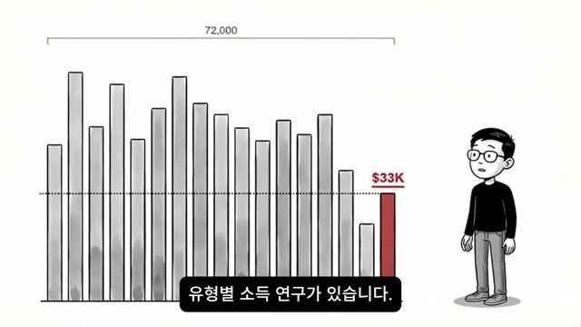
이 영상은 채널의 이전 영상(INFP의 실행력 문제가 의지력이 아닌 뇌 구조 때문이라는 내용)에 달린 수많은 댓글 중 가장 많이 반복된 질문에서 시작한다.
"실행은 알겠어요. 근데 그래서 돈은 어떻게 벌어요?"
이 질문에 답하기 위해 진행자는 TRUITY(미국 심리 연구 기관)의 대규모 연구를 소환한다. 이 연구는 7만 2천 명을 대상으로 진행된 세계 최대 규모의 성격 유형별 소득 연구다. 스크린샷에는 16개 MBTI 유형의 소득을 비교하는 막대 그래프가 등장하며, INFP를 나타내는 빨간 막대가 $33K로 표시되어 오른쪽 끝, 즉 최하위에 위치해 있는 것을 시각적으로 보여준다.
2. 충격적인 소득 격차 데이터
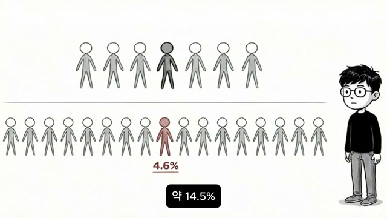
연구 결과의 핵심 수치들:
평균 연소득 비교
- INFP: 약 $33,000 (한화 약 4,000만 원 초반) → 16개 유형 중 최하위
- ENTJ: 약 $60,000 (한화 약 9,000만 원 가까이) → 1위
- 양측 격차: 약 $26,000 (한화 약 3,800만 원~4,000만 원)
고소득자 비율 (30~59세, 연 $150,000 이상)
- ENTJ: 약 14.5% → 7명 중 1명이 고소득자
- INFP: 약 4.6% → 20명 중 1명도 안 됨
최저소득 구간 비율 (연 $15,000 미만)
- INFP: 약 39.2% → 거의 10명 중 4명이 최저소득 구간
스크린샷에는 두 줄의 사람 아이콘이 표시되어 있는데, 위 줄(7명 중 1명이 강조)은 ENTJ의 14.5%, 아래 줄(20여 명 중 1명이 분홍색)은 INFP의 4.6%를 직관적으로 시각화하고 있다.
3. 문제의 본질 — 능력이 아닌 '관계 맺는 방식'의 차이
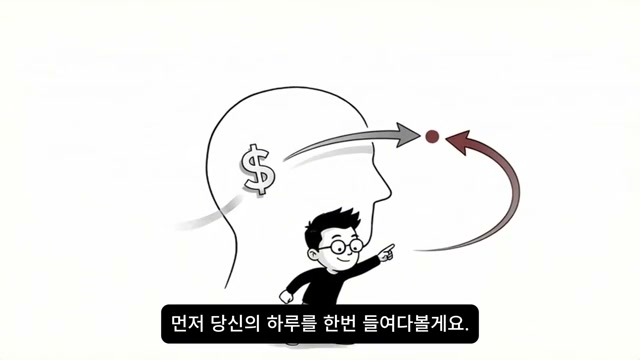
진행자는 위의 수치를 단순한 능력 차이로 해석하는 것을 강하게 부정한다.
"이건 능력의 문제가 아닙니다. 당신의 뇌가 돈과 관계 맺는 방식 자체가 다른 겁니다."
스크린샷에는 사람의 머리 실루엣 안에 달러 기호($)가 표시되고, 화살표가 순환하는 구조가 그려져 있다. 이는 돈에 대한 뇌의 반응 구조가 유형마다 다르게 설계되어 있음을 상징하는 시각적 표현이다. 영상은 이 구조를 뒤집는 방법을 알려주겠다고 선언하며 본론으로 넘어간다.
4. INFP의 하루 — 공감 유발 시나리오
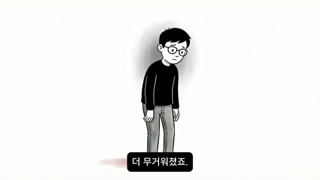
영상은 추상적인 데이터 설명 전에, 전형적인 INFP의 하루를 구체적으로 묘사하며 시청자의 공감을 끌어낸다. 이 장면은 단순한 스토리텔링이 아니라, 뒤에서 설명할 세 가지 구조적 문제를 생생하게 예시하는 역할을 한다.
아침 — SNS 비교의 순간
- 출근 전 핸드폰을 보다가 동기의 새 차 사진을 발견
- 축하 댓글을 달고 웃는 이모티콘을 붙이지만, 핸드폰을 내려놓는 순간 웃음이 사라짐
- "가슴 한가운데가 텅 비는 느낌, 나도 열심히 사는데 뭐가 다른 거지?"
직후 — 구직 시도와 좌절
- 무의식적으로 잡코리아 앱을 켬
- 채용 공고의 키워드들("공격적인 영업 마인드", "KPI 달성 중심", "성과 압박 환경")을 보는 순간 손가락이 멈춤
- "이건 내가 아니야" → 앱을 닫음 → 기분은 더 무거워짐 (스크린샷: 고개 숙인 캐릭터)
점심 — 재테크 대화의 뿌옇함
- 군 회식당에서 동료들이 주식, ETF, 부동산 이야기를 나눔
- INFP는 관심이 없는 게 아니라 오히려 너무 많아서 문제: "뭘 사야 하지? 지금 들어가도 되나? 이게 윤리적으로 괜찮은 회사인가? 수익률 말고 이 기업이 뭘 하는 회사인지가 먼저 궁금해요"
- 다른 사람들은 숫자만 보고 결정하는데, 내 머릿속에선 숫자 말고 다른 게 너무 많이 돌아감
- "나도 좀 공부해봐야겠다"는 말을 벌써 석 달째 하고 있음
밤 — 아이디어의 홍수와 결국 저장만
- 침대에 누워 "월 300 부업", "퇴근 후 수익 만들기" 유튜브 영상 서너 개 시청 (스크린샷: 폰으로 영상 보는 캐릭터)
- 블로그, 전자책, 상담 등 아이디어가 10개 떠오름
- 아이디어마다 따라붙는 질문들: "이걸로 정말 누군가에게 도움이 될까?", "돈만 벌려고 하는 건 아닌가?", "진짜 내가 하고 싶은 건 이게 맞나?"
- 결국 영상만 저장하고 눈을 감음 → "내일은 진짜 뭔가 시작해야지" → 같은 밤이 반복
이 시나리오가 묘사하는 핵심은 하나다.
"다른 사람들은 '일단 해봐'가 되는데, 당신의 뇌는 '일단 해봐'가 안 돼요. 의미가 먼저 확인돼야 손이 움직이거든요."
5. 기존 자기계발 영상의 처방이 INFP에게 안 통하는 이유

많은 자기계발 콘텐츠는 이 문제에 대해 이렇게 처방한다.
- "마인드셋을 바꿔라"
- "돈에 대한 부정적 신념을 깨라"
- "부자 마인드를 장착해라"
진행자는 이 처방이 INFP에게 효과가 없는 이유를 직접적으로 비판한다.
"인프피한테 '돈을 사랑해라'고 말하는 건 채식주의자한테 '고기를 좋아해봐'라고 말하는 거랑 똑같아요. 안 되는 게 아니라 뇌가 받아들이지를 않는 겁니다."
스크린샷에는 확성기(메가폰)에서 나오는 소리를 손을 들어 막는 INFP 캐릭터가 묘사되어 있으며, 확성기 쪽 화살표에 X 표시가 그려져 있다. 이는 외부에서 주입하는 메시지가 INFP의 뇌에 수용되지 않는다는 것을 시각적으로 표현한다.
6. 구조적 이유 1 — 소득 예측 성격 특성과 INFP의 역방향 야망
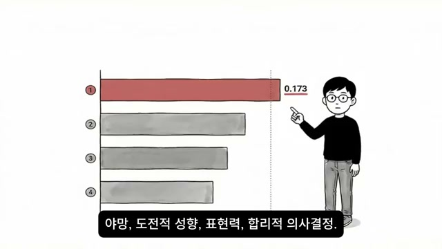
7만 2천 명 데이터에서 소득과 가장 강하게 연결된 성격 특성 4가지:
- 야망 (상관계수 약 0.173, 1위) — 돈을 많이 버는 사람일수록 야망이 높음
- 도전적 성향
- 표현력
- 합리적 의사결정
스크린샷에 막대 그래프가 등장하며, 빨간색 막대(야망, 1위)가 0.173이라는 수치와 함께 가장 길게 표시되고, 나머지 3개는 회색 막대로 순서대로 표시된다.
문제는 INFP가 이 4가지 특성 모두에서 낮은 편에 속한다는 것이다. 그러나 진행자는 중요한 구분을 제시한다.
야망의 방향 차이:
- 다른 유형의 야망: "더 많이, 더 높이, 더 빨리"
- INFP의 야망: "더 깊이, 더 진정성 있게, 더 의미 있게"
"문제는 세상의 보상 시스템이 전자에 맞춰져 있다는 겁니다."
7. 구조적 이유 2 — 돈을 벌 때 발동하는 '감정·윤리 경보'
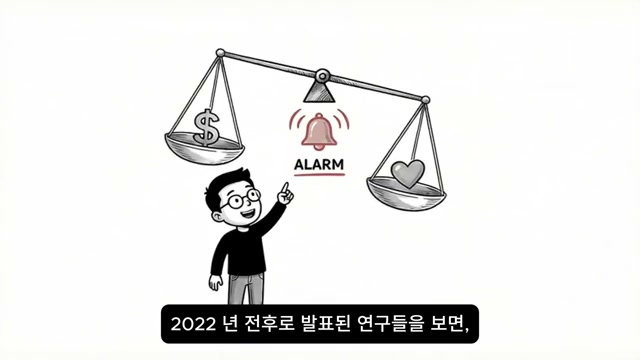
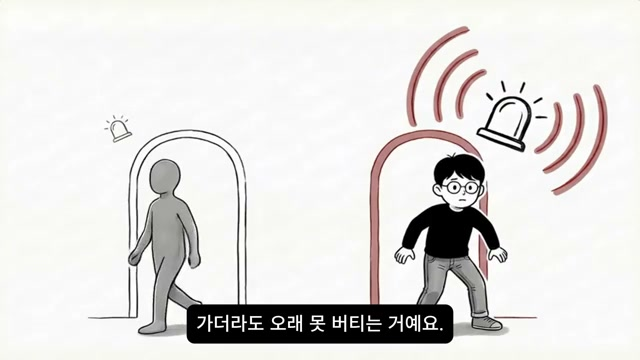
2022년 전후 발표된 연구들에 따르면, 개방성과 친화성이 높은 사람(이것이 정확히 INFP의 핵심 특성)은 업무가 자신의 윤리나 가치관과 충돌할 때 직업 스트레스가 유의미하게 높아진다.
스크린샷에는 저울의 한쪽에 달러 기호, 다른 쪽에 하트가 얹혀 있고, 가운데에 ALARM 벨이 경고하는 이미지가 등장한다. 이는 돈과 가치관 사이에서 발생하는 내면의 갈등을 시각화한 것이다.
실제로 INFP가 고수익 직군에 지원하거나 돈이 되는 일을 시작하려 할 때 뇌에서 발동하는 경보:
- "이거 나답지 않은데?"
- "이 돈이 깨끗한 돈인가?"
- "이걸 하면 내 가치가 훼손되는 거 아닌가?"
다른 유형은 이 경보가 약하거나 아예 없지만, INFP에게만 유독 강하게 울린다. 두 번째 스크린샷에는 고소득 직군으로 들어가는 문 앞에서 큰 경보가 울리는 INFP와, 경보 없이 유유히 들어가는 다른 유형이 대비되어 표현되어 있다. 이것이 고소득 직군에 가기 어렵고, 가더라도 오래 버티지 못하는 구조적 원인이다.
8. 구조적 이유 3 — 외재적 동기로는 엔진이 걸리지 않는 뇌
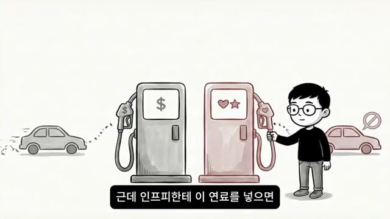
124개 연구를 종합한 대규모 메타분석 결과:
- 내재적 동기(일 자체의 즐거움·의미): 업무 성과의 약 45% 설명
- 외재적 동기(보수·승진): 겨우 9% 설명
스크린샷에는 두 종류의 주유기가 등장한다. 달러($) 표시가 붙은 주유기(외재적 동기)와 하트·별 표시가 붙은 주유기(내재적 동기). INFP의 차는 달러 주유기의 연료로는 달리지 못하고, 하트·별 주유기에서만 작동한다는 것을 시각적으로 보여준다.
대부분의 돈 버는 시스템은 외재적 동기를 연료로 설계되어 있다.
- "더 벌면 더 좋은 집, 더 좋은 차, 더 높은 지위"
이 연료는 사고형(T) 유형에게는 강력한 엔진이지만, INFP에게 넣으면 엔진이 걸리지 않는다.
INFP의 연료 = 의미
- 이 일이 누군가에게 도움이 되는가?
- 이게 내 가치와 일치하는가?
- 이걸 통해 나는 어떤 사람이 되는가?
이 세 가지가 충족돼야 비로소 INFP의 엔진이 돌아간다.
종합 비유:
"가솔린 엔진용 주유소밖에 없는 세상에서 전기차를 몰고 있는 셈이에요. 충전소를 못 찾은 거지, 차가 고장난 게 아닙니다."
9. 데이터에 숨겨진 반전 — 늦깎기 성장 곡선
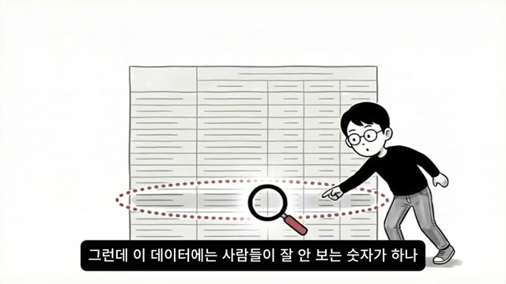
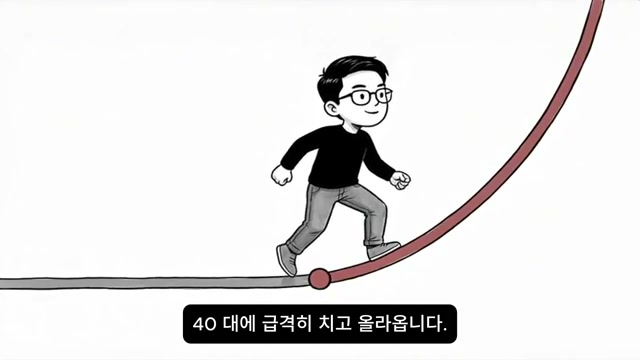
영상의 전환점이 되는 핵심 데이터가 제시된다. 진행자는 "이 데이터에는 사람들이 잘 안 보는 숫자가 하나 더 숨어 있다"고 말하며 연령대별 소득 분포를 공개한다. 스크린샷에는 돋보기를 들고 대형 데이터 표를 살펴보는 INFP 캐릭터가 등장한다.
INFP 연령대별 평균 소득:
- 20대: 약 $23,000 → "처참하죠"
- 30대: 약 $37,000 → "여전히 낮아요"
- 40대: 약 $54,000 → 급등
20대에서 40대 사이 소득 상승폭: 약 2.3배
두 번째 스크린샷에는 처음에는 완만하다가 40대부터 급격하게 위로 꺾이는 붉은 성장 곡선 위를 INFP 캐릭터가 달리는 장면이 표현되어 있다.
다른 유형과의 성장 곡선 비교:
- 다른 유형: 20대부터 꾸준히 상승하다가 40대쯤 성장이 멈춤
- INFP: 20~30대에 바닥을 기다가 40대에 급격히 치고 올라옴 → 전형적인 늦깎기 성장 곡선
10. 늦깎기 성장의 메커니즘 — 자기 탐색 기간과 내재적 동기의 폭발
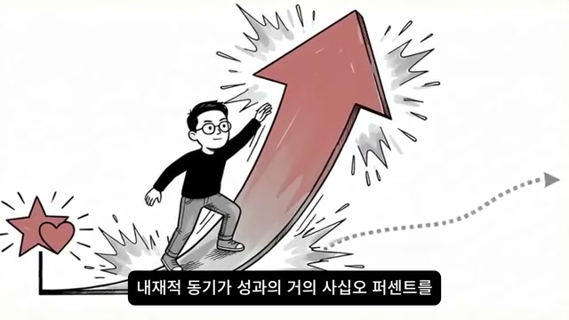
왜 INFP는 늦게 치고 올라오는가?
내향적 직관형 4개 유형(INFP, INFJ, INTJ, INTP)은 다른 유형보다 학업이나 자기 탐색에 머무는 기간이 유의미하게 더 길었다. INFP의 학생 비율이 약 13.7%로 다른 유형보다 높게 나타났다.
즉, INFP는 돈을 빨리 벌지 못하는 게 아니라, 자기가 진짜 하고 싶은 것을 찾는 데 시간을 더 쓰는 것이다.
그리고 그걸 찾은 이후에는: 124개 연구 메타분석에서 확인된 내재적 동기(성과에 45% 기여)가 폭발하면서, 다른 유형이 외재적 보상(금전, 승진)으로 끌어올린 성과를 단숨에 따라잡는다.
"40대의 소득 급등이 바로 이 구조예요."
스크린샷에는 별과 하트 기호(내재적 동기)가 붙은 지점에서 거대한 화살표가 폭발적으로 위로 솟구치는 이미지가 표현되어 있다.
11. 문제의 핵심 — 자책과 포기의 악순환
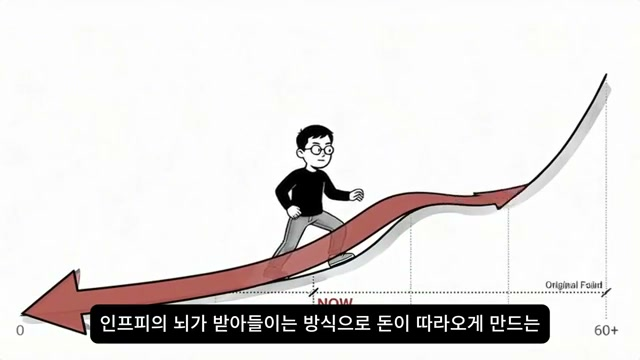
대부분의 INFP가 이 구조를 모른 채 20~30대를 보낸다. "나는 왜 남들만큼 못 벌까"라는 자책 속에서 자신이 늦깎기 성장형임을 모르고 포기해버린다는 것이다.
스크린샷에는 성장 곡선 그래프가 두 개 겹쳐 있다. 점선으로 표시된 'Original Point'(다른 유형의 일반적 성장 경로)와 붉은색 굵은 선으로 표시된 INFP의 성장 경로가 대비된다. INFP의 경로는 초반에 아래로 크게 꺾였다가 'NOW' 지점을 지나 60대 이후까지 가파르게 상승하는 형태로, 지금 포기하는 것이 얼마나 아까운 일인지를 직관적으로 보여준다.
오늘 영상의 핵심 목적이 여기서 선언된다.
"오늘 알려드릴 건 이 40대 반전을 30대, 아니 지금 당장 앞당기는 방법입니다."
12. 가치 번역 수익화 — INFP 전용 수익화 프레임워크
기존 수익화 공식 (사고형 유형에 최적화):
시장이 원하는 걸 찾고 → 그걸 팔아서 → 돈을 번다
(시장 → 판매 → 수익)
이 순서는 논리적이지만 INFP의 뇌는 이 방식으로 작동하지 않는다.
INFP 전용 수익화 순서 — '가치 번역 수익화':
내가 진짜 가치 있다고 믿는 걸 찾고 → 그걸 누군가에게 도움이 되는 형태로 번역하고 → 그 도움에 대한 대가로 돈이 흘러 들어온다
(가치 → 번역 → 수익)
13. 3단계 실행 — Step 1: 가치 발견
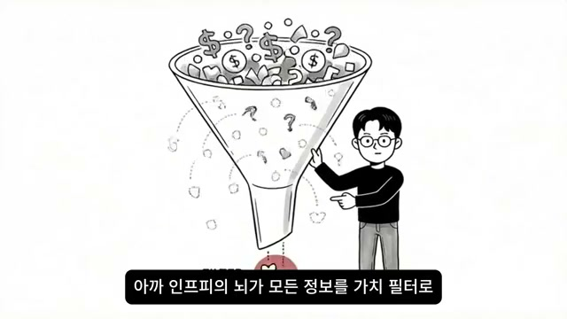
INFP의 뇌는 모든 정보를 가치 필터로 통과시킨다. 이 특성이 돈을 벌 때는 방해물이었지만, 수익화 방향을 정할 때는 최고의 무기가 된다.
다른 유형: "뭐가 돈이 되지?" → 수천 가지 답이 나옴 → 아무거나 골라서 시작 가능
INFP: "이게 정말 의미 있는 일인가?" → 이 필터를 통과하는 건 몇 개 안 됨 → 오히려 강점
스크린샷에는 위에서 다양한 기호들(달러, 물음표, 도형 등)이 깔때기(필터)로 들어가고, 아래에서는 소수의 핵심(하트 모양)만 빠져나오는 이미지가 표현되어 있다.
TRUITY 연구의 추가 발견:
- 사고형(T) 유형이 소득은 더 높았지만
- 감정형(F) 유형이 직업 만족도는 더 높았다
스크린샷에는 막대 그래프 두 쌍이 등장한다. 왼쪽 쌍(HIGH INCOME vs. 만족도)에서 달러 막대가 높은 것과, 오른쪽 쌍에서 만족도(웃는 얼굴) 막대가 더 높은 것이 대비되어 표현된다.
가치 정렬의 연쇄 효과:
- 가치와 일치하는 일 발견 → 만족도 상승 → 오래 버팀 → 결국 성과 달성
"40대 반전의 비밀이 바로 이거예요."
14. 3단계 실행 — Step 2: 가치를 시장 언어로 번역
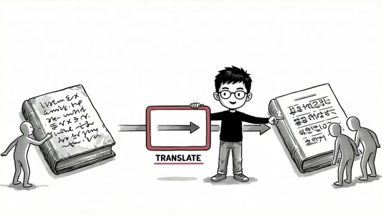
대부분의 INFP가 막히는 지점이 바로 여기다. 가치는 있지만 그것을 돈으로 바꾸는 방법을 모른다.
번역의 비유:
"아무리 좋은 책을 가지고 있어도 외국어로 쓰여 있으면 아무도 안 읽어요. 번역이 필요한 거예요."
스크린샷에는 왼쪽의 해독 불가능한 글자가 적힌 책이 가운데의 'TRANSLATE' 상자를 거쳐 오른쪽의 한국어 책으로 변환되는 장면이 묘사되어 있다.
실제 번역 예시:
- "나는 사람들의 마음을 잘 이해해요" → "고객의 감정을 읽고 신뢰를 설계하는 브랜딩 전문가"
- "나는 깊이 있는 글을 잘 써요" → "사람의 마음을 움직이는 콘텐츠를 만드는 카피라이터"
핵심은 가치 자체는 1mm도 훼손되지 않는다는 것이다.
"포장이 바뀌는 거지 내용물이 바뀌는 게 아니거든요."
15. 3단계 실행 — Step 3: 수익 흐름 설계
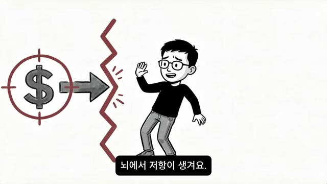
INFP가 "나 이만큼 벌어야지"라고 금전적 목표를 세우면 뇌에서 저항이 생긴다. 이를 우회하는 핵심 원칙:
기존 방식 (INFP 뇌가 거부):
"돈을 목표로 놓는다" → 뇌의 저항 발동
INFP에 맞는 방식:
"내가 만든 이 콘텐츠가 100명에게 도움이 된다면, 그 중 10명이 감사의 의미로 돈을 지불하는 건 자연스러운 일이야"
스크린샷에는 달러 표시가 조준경에 들어 있고, 화살표가 벽에 막혀 부서지는 이미지가 표현된다. 이는 돈을 직접 목표로 삼았을 때 INFP 뇌가 차단하는 구조를 시각화한 것이다.
이 프레이밍의 효과: 뇌의 가치 필터가 "이건 괜찮아, 나답게 돈을 버는 거니까"라고 승인을 내린다.
16. 실전 전술 1 — 가치 앵커 세팅
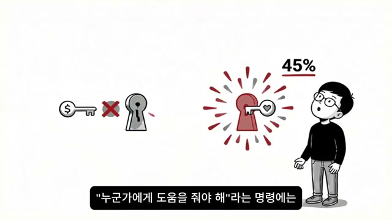
매일 아침 딱 한 가지를 적는다:
"오늘 내가 누군가에게 줄 수 있는 가치는 뭐지?"
스크린샷에는 달러($) 열쇠는 잠금 구멍에 들어가지 않고(X 표시), 하트 열쇠는 찰칵 맞아들어가며 '45%'라는 숫자가 빛나는 이미지가 묘사된다. 이는 내재적 동기 엔진(45%)을 여는 올바른 열쇠가 '가치 앵커'임을 시각화한 것이다.
이것이 효과적인 이유:
- INFP의 뇌는 "돈을 벌어야 해"라는 명령에는 엔진이 안 걸리지만
- "누군가에게 도움을 줘야 해"라는 명령에는 즉시 반응한다
- 가치 앵커가 매일 아침 그 45%짜리 엔진을 점화시키는 스타터가 된다
구체적 실행 방법:
- 핸드폰 메모장을 연다
- 상단에 "오늘의 가치"라고 적는다
- 딱 한 줄만 쓴다 (예: "우울할 때 내가 쓰는 회복 루틴을 인스타 스토리로 공유한다")
- 작성 시간: 30초 이내
이 30초가 하루의 방향을 완전히 바꾼다. "돈을 벌어야 하는 하루"가 "가치를 전달하는 하루"로 전환된다.
17. 실전 전술 2 — 원 포켓(One Pocket) 수익화
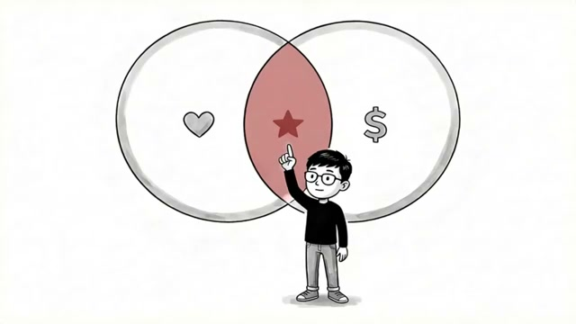
INFP가 돈 앞에서 멈추는 큰 이유 중 하나: 선택지 과부하
- 블로그, 유튜브, 전자책, 클래스, 코칭, 팟캐스트... 10개의 가능성이 동시에 떠오름
- 아무것도 실행하지 못함
스크린샷에는 INFP 캐릭터 주변으로 노트북, 카메라, 마이크, 펜, 책, 설정 아이콘 등 수많은 수익화 채널 아이콘들이 사방으로 퍼져 있는 혼란스러운 이미지가 묘사된다.
해결책: 수익화 주머니를 딱 한 개만 만들기
나머지는 전부 버린다. "나는 앞으로 세 달간 이것 하나에만 집중한다"고 선언한다.
고르는 기준 — 두 원의 교집합:
- INFP의 가치 필터를 통과하는 것
- 동시에 시장에서 돈을 지불하는 사람이 존재하는 영역
두 번째 스크린샷에는 벤 다이어그램이 등장한다. 왼쪽 원(하트=가치)과 오른쪽 원(달러=시장)이 겹치는 가운데 붉은 교집합 부분에 별이 표시되어 있다. INFP가 선택해야 할 것이 바로 이 교집합 영역임을 시각적으로 보여준다.
예시:
- 심리에 관심이 많고 글을 잘 쓴다면 → 블로그나 뉴스레터
- 공감 능력이 뛰어나고 사람과 대화하는 걸 좋아한다면 → 1대1 상담이나 코칭
중요한 건 한 개다. 뇌의 선택 과부하를 물리적으로 차단하는 것이다.
18. 실전 전술 3 — 70% 런칭
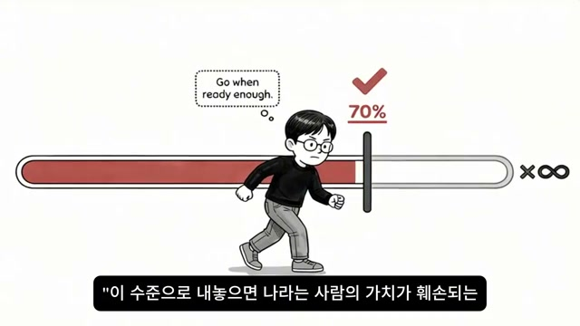
INFP의 뇌는 "완벽하지 않으면 세상에 내놓으면 안 된다"고 생각한다.
- 전자책을 쓰면 10번을 고침
- 블로그 글을 쓰면 발행 버튼 앞에서 30분을 고민
이것은 단순한 완벽주의가 아니다. INFP에게 이건 진정성의 문제다.
"이 수준으로 내놓으면 나라는 사람의 가치가 훼손되는 거 아닌가?"
스크린샷에는 진행 게이지 바가 70% 지점까지 채워져 있고, 그 위에 "Go when ready enough"라는 말풍선이 달려 있으며, 100%에는 "x∞"(무한히 채울 수 없음)가 표시되어 있다. 이는 완벽을 추구할수록 영원히 출발할 수 없다는 것을 상징한다.
70% 법칙의 근거:
- 70% 수준의 결과물을 세상에 내보내면 피드백이 돌아온다
- 그 피드백이 나머지 30%를 채워준다
- 100%를 혼자 채우려 하면 → 피드백 없이 혼자 완성하는 건 불가능
피드백의 힘 — 내재적 동기 폭발의 순환:
- 70% 글 게시 → 댓글: "이 글 덕분에 오늘 좀 나아졌어요"
- INFP의 뇌가 수신하는 신호: "네가 한 일이 의미 있었어"
- 이 신호를 받는 순간 내재적 동기 엔진이 폭발적으로 가동
- 그 엔진으로 다음 글 작성 → 또 피드백 → 또 엔진 가동
"이 순환이 시작되면 인프피는 누가 시키지 않아도 멈추지 않아요."
19. 실전 전술 4 — 자동 수익 흐름 설계
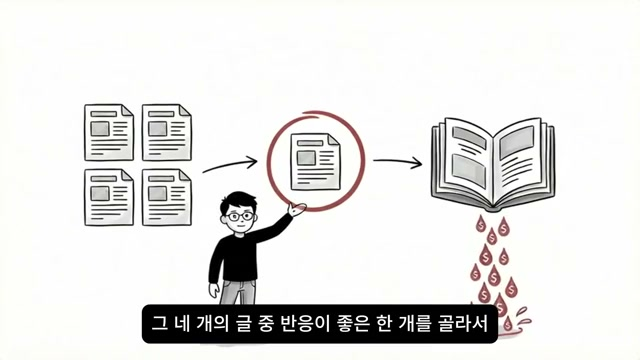
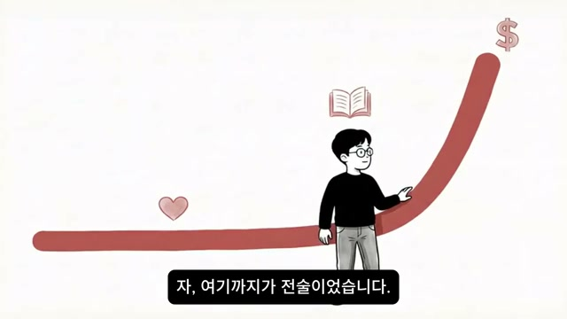
INFP는 매번 "돈을 벌까 말까"를 의식적으로 결정하면 뇌가 지친다. 감정과 윤리 사이에서 매번 갈등이 생기기 때문이다. 따라서 한번 설계해 놓으면 자동으로 돌아가는 구조가 필요하다.
구체적 자동화 설계 예시:
- 심리 관련 블로그를 운영하기로 결정
- 한 달에 글 4개 작성
- 반응이 좋은 글 1개를 선택
- 그 글을 전자책으로 확장
- 전자책에 3만 원 가격 책정
- 이후에는 글을 안 쓰는 날에도, 자는 동안에도 전자책이 팔림
스크린샷에는 이 흐름이 시각화되어 있다. 4개의 문서 아이콘 중 하나가 빨간 원으로 강조되고, 그것이 화살표를 통해 책(전자책)으로 변환되며, 책에서 달러 방울들이 떨어지는 이미지다.
이 구조가 INFP 뇌에 받아들여지는 이유:
- "내가 공유한 가치에 감사를 표하는 사람이 돈을 내는 것"
- "내가 누군가한테 돈을 뜯어내는 것"이 아님
자동화 설계의 추가 이점:
- 매일 "돈을 벌까 말까" 고민 자체가 사라짐
- 감정·윤리 갈등도 사라짐
- 절약된 에너지를 콘텐츠 만드는 데 투입 가능
20. 마지막 메시지 — 플러그를 뽑지 마세요
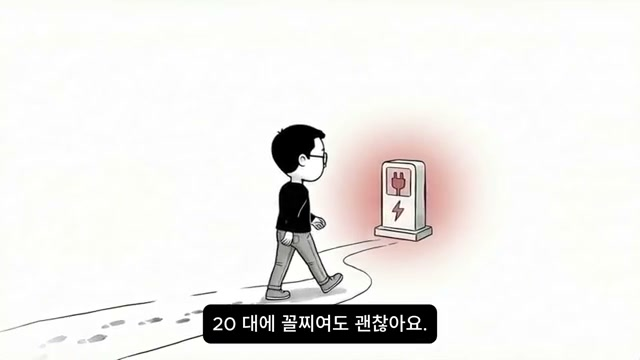
영상의 마지막 섹션은 전체 영상에서 가장 중요한 이야기라고 진행자가 직접 강조한다.
전기차 충전 비유의 완성:
- 다른 유형: 가솔린을 넣으면 바로 달릴 수 있음
- INFP: 전기를 충전해야 함 → 충전 시간이 필요
- 그러나 한번 충전이 되면: 전기차가 가솔린 차보다 가속이 빠름
스크린샷에는 전기 충전소를 향해 걸어가는 INFP의 모습이 묘사되어 있다. 충전소는 붉은 빛을 내며 INFP를 기다리고 있다. 이는 INFP만의 에너지원(의미와 가치)을 찾아가는 여정을 상징한다.
비극의 실체:
많은 INFP가 충전이 끝나기 전에 포기한다.
- "나는 원래 돈이랑 안 맞는 사람이야"
- "나는 현실적인 게 안 맞아"
- "나는 평생 이렇게 사는 거겠지"
충전이 70%까지 됐는데, 80%만 넘으면 엔진이 걸리는데, 거기서 플러그를 뽑아버리는 것이다.
데이터가 말하는 진실:
"인프피는 반드시 올라옵니다. 다만 조건이 하나 있어요. 자기 방식으로 올라와야 한다는 겁니다."
마지막 선언:
"당신이 돈을 못 버는 게 아니에요. 돈 버는 방법을 잘못 배운 거예요. 세상이 가르쳐 준 방법은 NTJ 용이었어요. 당신한테는 당신만의 충전소가 필요했던 거고, 오늘 그 충전소 위치를 알려드린 겁니다."
주요 인용 및 발언
"인프피가 돈을 못 버는 건 돈 버는 능력이 없어서가 아니라, 세상의 수익화 시스템이 당신의 뇌와 안 맞는 거예요."
"가솔린 엔진용 주유소밖에 없는 세상에서 전기차를 몰고 있는 셈이에요. 충전소를 못 찾은 거지, 차가 고장난 게 아닙니다."
"인프피한테 '돈을 사랑해라'고 말하는 건 채식주의자한테 '고기를 좋아해봐'라고 말하는 거랑 똑같아요."
"당신의 연료는 의미예요. 그 의미를 찾고 번역하고 세상에 내보내세요. 돈은 따라옵니다."
"안 되는 게 아니었습니다. 방법이 맞지 않았을 뿐입니다."
"20대에 꼴찌여도 괜찮아요. 30대에 아직 못 찾았어도 괜찮아요. 데이터가 말해주고 있잖아요. 인프피는 반드시 올라옵니다."
"충전이 70%까지 됐는데, 80%만 넘으면 엔진이 걸리는데, 거기서 플러그를 뽑아버리는 거예요. 오늘 이 영상을 보고 계신 당신, 플러그를 뽑지 마세요."
결론 및 시사점
핵심 메시지 종합
이 영상의 근본 주장은 하나다. INFP의 저소득은 능력 부족이 아닌 시스템 불일치의 문제다. 세상의 수익화 시스템이 외재적 동기(돈, 지위, 성과 압박)를 연료로 설계되어 있는데, INFP는 내재적 동기(의미, 가치, 진정성)로만 작동하는 다른 종류의 엔진을 가지고 있다. 이 불일치를 인식하지 못하고 남의 방식을 억지로 따라가다 보면 소득도 낮고 만족도도 낮은 최악의 결과가 나온다.
실용적 시사점
즉시 적용 가능한 것:
- 오늘부터 매일 아침 "오늘 내가 누군가에게 줄 수 있는 가치는?"을 메모장에 한 줄로 적는 것(가치 앵커)
- 현재 고민 중인 수익화 방법 중 딱 한 개만 남기고 나머지는 버리는 것(원 포켓)
- 완성도가 70%가 되면 일단 세상에 내보내는 것(70% 런칭)
- 블로그 4개 → 전자책 1개 구조로 자동 수익 시스템 설계 시작(자동 수익 흐름)
인식의 전환:
- "나는 왜 남들만큼 못 버나"라는 자책 → "나는 늦깎기 성장형이고, 아직 충전 중이다"
- "돈을 벌어야 해"라는 목표 → "가치를 전달하면 돈이 따라온다"
- "100% 완성 후 발행" → "70%면 충분히 내보낸다"
데이터 기반 근거 정리
영상에서 인용된 연구들:
- TRUITY 심리연구기관: 72,000명 대상 MBTI 유형별 소득 연구 (세계 최대 규모)
- 124개 연구 종합 메타분석: 내재적 동기가 업무 성과의 45% 설명, 외재적 동기는 9%
- 2022년 전후 연구: 개방성·친화성 높은 유형의 가치관-업무 충돌 시 직업 스트레스 증가
- 내향적 직관형 4유형 연구: INFP·INFJ·INTJ·INTP의 자기 탐색 기간이 다른 유형보다 유의미하게 긴 것으로 확인 (INFP 학생 비율 약 13.7%)
영상의 의의
이 영상이 기존의 수많은 "MBTI와 돈" 콘텐츠와 차별화되는 지점은 단순히 "INFP에게 맞는 직업 추천"이나 "마인드셋 변화"를 이야기하지 않는다는 점이다. 실제 대규모 데이터와 뇌과학·심리학 연구를 근거로 INFP가 돈을 못 버는 구조적 이유를 설명하고, 그 구조 자체를 역이용하는 구체적 전술을 제시한다. 특히 40대 소득 급등이라는 숨겨진 데이터를 통해 INFP의 늦깎기 성장을 단순한 위로가 아닌 데이터 기반 사실로 제시하는 방식은 INFP 시청자에게 실질적인 인식 전환을 가져다 줄 수 있다.
본 영상은 연구 데이터를 바탕으로 제작되었으며, 의학적 진단이나 재무 상담을 대신하지 않습니다. MBTI는 경향성을 보여주는 도구이며, 개인의 결과는 다양한 요인에 따라 달라질 수 있습니다.
댓글
GitHub 이슈 기반 댓글 시스템입니다.